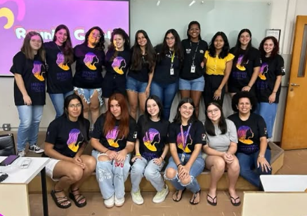

O projeto de extensão Meninas Digitais UTFPR-CP foi criado em 2023 na Universidade Tecnológica Federal do Paraná (UTFPR) do câmpus Cornélio Procópio e atua para diminuir essa desigualdade incentivando as meninas do ensino fundamental e médio de escolas públicas a ingressarem nos estudos e carreiras de tecnologia.
O projeto é composto por alunos voluntários da UTFPR e possui uma Professora coordenadora responsável que é a professora Rosangela Marquesone. O projeto estrutura-se em três setores principais, cada um desempenhando funções essenciais para seu funcionamento. O setor de Marketing é responsável pela divulgação do projeto nas redes sociais, incluindo Instagram, Facebook e LinkedIn, ampliando seu alcance e engajamento. O setor de Gestão de Pessoas conduz os processos seletivos, além de coordenar a integração dos voluntários, promovendo um ambiente colaborativo. Por fim, o setor de Instrutores/Conteúdo atua na criação de materiais didáticos para aulas e oficinas, bem como na ministração das atividades educativas, garantindo a transmissão de conhecimento de forma eficiente.
O projeto oferece oficinas, palestras, minicursos, roda de conversa e participação no Technovation Girls, uma competição global de inovação, alinhado com os Objetivos Sustentáveis da ONU (ODS) , como o de diminuir a desigualdade de gênero e promover a educação. As oficinas e mentorias do Technovation Girls são destinadas a meninas do Ensino Fundamental II e Médio de Cornélio e região, proporcionando a oportunidade de desenvolver soluções tecnológicas para desafios sociais. Durante o programa, são oferecidos suporte técnico completo e aulas sobre as ferramentas Thunkable e MIT App Inventor, utilizadas na criação de aplicativos móveis por meio de programação em blocos, facilitando o aprendizado e a aplicação prática da tecnologia.